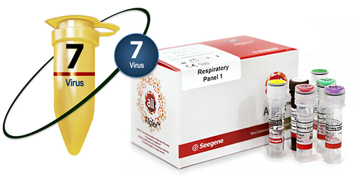

ALLPLEX™ RESPIRATORY PANEL 1

INDICACIÓN DE USO:
AllplexTM II Respiratory Panel 1 es una prueba de RT-PCR en tiempo real de un solo paso para la detección e identificación de 4 virus y 3 subtipos de influenza A causantes de enfermedades respiratorias, en una sola reacción.
Analitos:
• Virus de la influenza A (FluA):
- Flu A-H1
- Flu A-H1pdm09
- Flu A-H3
• Virus de la Influenza B (FluB).
• Virus Sincitial Respiratorio A (RSV A).
• Virus Sincitial Respiratorio B (RSV B).
Muestras:
• Aspirado nasofaríngeo.
• Exudado nasofaríngeo.
• Lavado bronco-alveolar.
Equipos compatibles:
• Extracción automatizada y montaje de PCR.
- Nimbus IVD (Hamilton).
- STARlet (Hamilton).
• PCR en tiempo real.
- CFX96™ (Bio-Rad).
CARACTERÍSTICAS.
• Ensayo de RT-PCR en tiempo real de un solo paso.
• Detección y diferenciación de 4 virus y 3 subtipos de Influenza A, causantes de enfermedades respiratorias en una sola reacción.
• Muestra el valor Ct individual de cada patógeno en un solo canal.
• Mayor rentabilidad debido al empleo de un solo tubo–una sola reacción.
• Control interno endógeno para la validez del ensayo.
• Interpretación de datos sencilla mediante el uso del Visualizador de Seegene.
Visualizador Seegene:
• Análisis e interpretación de resultados rápidos y sencillos.
• Interfase especializada para pruebas multiplex.
• Enlazable a LIS.
• Entrada de datos del paciente a través del sistema de código de barras.
• Impresión en varios formatos.
• Resultados descargables en archivo CVS.
• Visualización conveniente para el análisis cuantitativo de resultados.
INFORMACIÓN DE PEDIDO:
|
Nombre del producto |
Catálogo No. |
Presentación |
|
Allplex™ Respiratory Panel 1 |
RP9801Y |
50 rxns |
|
Allplex™ Respiratory Panel 1 |
RP9801X |
100 rxns |
PUBLICIDAD DIRIGIDA A
PROFESIONALES DE LA SALUD
Registro Sanitario No.: 0486R2017 SSA
Aviso de Publicidad No.: 173300202C3471
DATOS COMPLEMENTARIOS: Para mayor información comunicarse a:
amplibio-seegene diagnostics, S.A.p.i. DE C.V.
Teléfonos: (55) 5035-9808, 5377-1609,
5377-1615, 5377-1612
www.asdx.mx